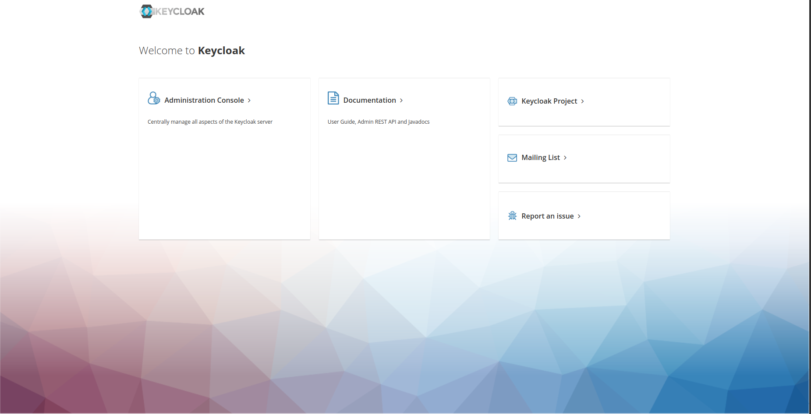
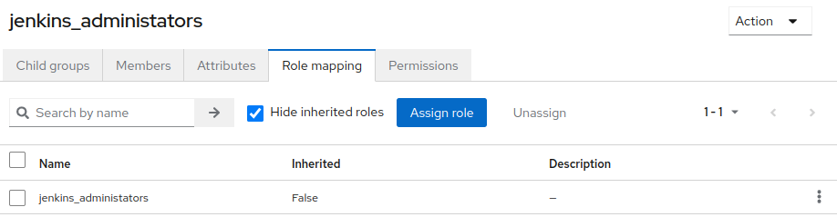
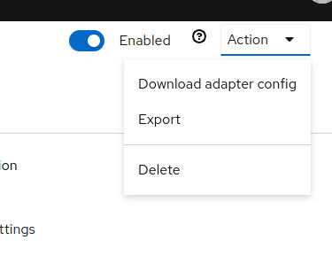
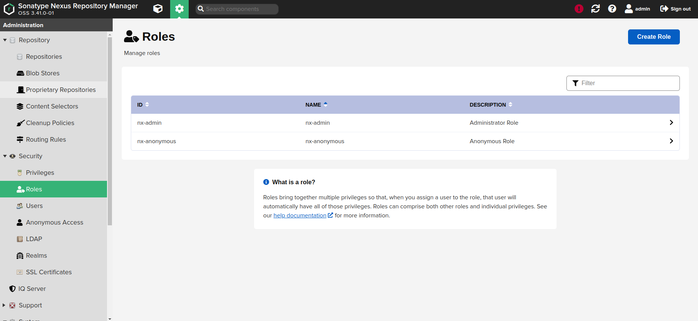
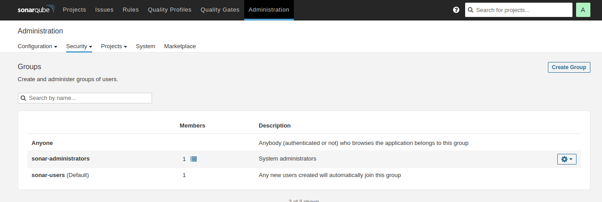
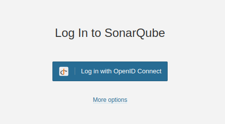
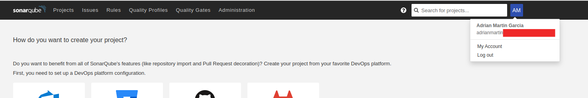

Keycloak¶
Keycloak is an open source software product that enables single sign-on (IdP) with Identity Management and Access Management for modern applications and services. This software is written in Java and supports by default SAML v2 and OpenID Connect (OIDC) / OAuth2 identity federation protocols. It is licensed from Apache and is supported by Red Hat.
From a conceptual perspective, the intent of the tool is to facilitate the protection of applications and services with little or no encryption. An IdP allows an application (often called a Service Provider or SP) to delegate its authentication.
Installation¶
We will install Keycloak on Kubernetes, for this we will use the official Helm Chart for the new version of KeycloakX.
The Helm values we will use will be:
# Ref: https://github.com/codecentric/helm-charts/blob/master/charts/keycloakx/values.yaml
command:
- "/opt/keycloak/bin/kc.sh"
- "--verbose"
- "start"
- "--http-enabled=true"
- "--http-port=8080"
- "--hostname-strict=false"
- "--hostname-strict-https=false"
- "--spi-events-listener-jboss-logging-success-level=info"
- "--spi-events-listener-jboss-logging-error-level=warn"
extraEnv: |
- name: KEYCLOAK_ADMIN
valueFrom:
secretKeyRef:
name: {{ include "keycloak.fullname" . }}-admin-creds
key: user
- name: KEYCLOAK_ADMIN_PASSWORD
valueFrom:
secretKeyRef:
name: {{ include "keycloak.fullname" . }}-admin-creds
key: password
- name: JAVA_OPTS_APPEND
value: >-
-XX:+UseContainerSupport
-XX:MaxRAMPercentage=50.0
-Djava.awt.headless=true
-Djgroups.dns.query={{ include "keycloak.fullname" . }}-headless
ingress:
enabled: true
ingressClassName: "nginx"
servicePort: http
annotations:
external-dns.alpha.kubernetes.io/hostname: keycloak.<your-domain>
nginx.ingress.kubernetes.io/proxy-buffer-size: "128k"
rules:
- host: 'keycloak.<your-domain>'
paths:
- path: '{{ tpl .Values.http.relativePath $ | trimSuffix "/" }}/'
pathType: Prefix
console:
enabled: true
ingressClassName: "nginx"
annotations:
nginx.ingress.kubernetes.io/proxy-buffer-size: "128k"
rules:
- host: 'keycloak.<your-domain>'
paths:
- path: '{{ tpl .Values.http.relativePath $ | trimSuffix "/" }}/admin'
pathType: Prefix
dbchecker:
enabled: true
database:
vendor: <database-vendor>
hostname: <database-hostname>
port: <database-port>
database: <database-name>
username: <database-username>
password: <database-password>
secrets:
admin-creds:
stringData:
user: <user>
password: <password>
If you have a realm.json file with the configuration, you can optionally add:
command:
- "/opt/keycloak/bin/kc.sh"
- "--verbose"
- "start"
# Add `--import-realm` flag
# https://www.keycloak.org/server/importExport
- "--import-realm"
- "--http-enabled=true"
- "--http-port=8080"
- "--hostname-strict=false"
- "--hostname-strict-https=false"
- "--spi-events-listener-jboss-logging-success-level=info"
- "--spi-events-listener-jboss-logging-error-level=warn"
extraVolumes: |
- name: {{ include "keycloak.fullname" . }}-realm
secret:
secretName: {{ include "keycloak.fullname" . }}-realm
extraVolumeMounts: |
- name: {{ include "keycloak.fullname" . }}-realm
mountPath: "/opt/keycloak/data/import/realm.json"
readOnly: true
subPath: realm.json
secrets:
realm:
stringData:
realm.json: <realm-file>
Login¶

Configure Microsoft Azure as Identity Provider¶
App Registration¶
Create your Azure App Registration with the following config:

Keycloak Indentity Provider¶
Create provider with the data for Azure App Registration.

Integrations¶
Jenkins¶
In this page we define the configuration for a correct integration between Jenkins and Keycloak.
Requirements¶
Configuration¶
First we will need to configure Keycloak. We will assume that we have a new Realm called Factory.
Keycloak¶
Clients¶
Create jenkins client.

Realm roles¶
Create Realm roles:
- jenkins_administrators
- jenkins_readonly

Groups¶
Create groups:
- jenkins_administrators
- jenkins_readonly

And assign Role mapping in each group. For example:

Users¶
Join user to a jenkins_administrators group.

Jenkins¶
At this point we define the necessary configuration in Jenkins to be able to perform the integration with Keycloak.
Download adapter config¶

Configuration¶
The YAML file for the Helm Chart is:
controller:
tag: "2.361.2"
installPlugins:
- locale:204.v2a_f305fe7e9d
- pipeline-model-extensions:2.2118.v31fd5b_9944b_5
- echarts-api:5.4.0-1
- docker-workflow:528.v7c193a_0b_e67c
- jaxb:2.3.7-1
- snakeyaml-api:1.32-86.ve3f030a_75631
- branch-api:2.1046.v0ca_37783ecc5
- ssh-credentials:305.v8f4381501156
- sshd:3.236.ved5e1b_cb_50b_2
- jackson2-api:2.13.4.20221013-295.v8e29ea_354141
- javax-activation-api:1.2.0-5
- variant:59.vf075fe829ccb
- structs:324.va_f5d6774f3a_d
- popper2-api:2.11.6-2
- pipeline-stage-tags-metadata:2.2118.v31fd5b_9944b_5
- antisamy-markup-formatter:2.7
- pipeline-utility-steps:2.13.0
- workflow-aggregator:590.v6a_d052e5a_a_b_5
- instance-identity:116.vf8f487400980
- mailer:438.v02c7f0a_12fa_4
- command-launcher:1.2
- ace-editor:1.1
- commons-text-api:1.10.0-27.vb_fa_3896786a_7
- bouncycastle-api:2.26
- jdk-tool:55.v1b_32b_6ca_f9ca
- pipeline-model-api:2.2118.v31fd5b_9944b_5
- junit:1153.v1c24f1a_d2553
- ssh-slaves:2.854.v7fd446b_337c9
- envinject:2.881.v37c62073ff97
- pipeline-model-definition:2.2118.v31fd5b_9944b_5
- rebuild:1.34
- pipeline-groovy-lib:613.v9c41a_160233f
- configuration-as-code:1559.v38a_b_2e3b_6b_b_7
- commons-lang3-api:3.12.0-36.vd97de6465d5b_
- workflow-cps:2803.v1a_f77ffcc773
- display-url-api:2.3.6
- workflow-step-api:639.v6eca_cd8c04a_a_
- jakarta-activation-api:2.0.1-2
- credentials:1189.vf61b_a_5e2f62e
- workflow-scm-step:400.v6b_89a_1317c9a_
- trilead-api:2.72.v2a_3236754f73
- ionicons-api:31.v4757b_6987003
- jquery3-api:3.6.1-2
- git-client:3.12.1
- credentials-binding:523.vd859a_4b_122e6
- pipeline-milestone-step:101.vd572fef9d926
- plain-credentials:139.ved2b_9cf7587b
- envinject-api:1.199.v3ce31253ed13
- kubernetes-credentials:0.9.0
- pipeline-build-step:2.18
- caffeine-api:2.9.3-65.v6a_47d0f4d1fe
- authentication-tokens:1.4
- job-dsl:1.81
- javax-mail-api:1.6.2-8
- timestamper:1.20
- apache-httpcomponents-client-4-api:4.5.13-138.v4e7d9a_7b_a_e61
- script-security:1189.vb_a_b_7c8fd5fde
- font-awesome-api:6.2.0-3
- plugin-util-api:2.18.0
- workflow-job:1249.v7d974144cc14
- token-macro:308.v4f2b_ed62b_b_16
- git:4.12.1
- workflow-basic-steps:994.vd57e3ca_46d24
- kubernetes:3734.v562b_b_a_627ea_c
- bootstrap5-api:5.2.1-3
- scm-api:621.vda_a_b_055e58f7
- metrics:4.2.10-389.v93143621b_050
- pipeline-stage-step:296.v5f6908f017a_5
- workflow-multibranch:716.vc692a_e52371b_
- docker-commons:1.21
- checks-api:1.7.5
- durable-task:501.ve5d4fc08b0be
- workflow-durable-task-step:1210.va_1e5d77e122b
- jsch:0.1.55.61.va_e9ee26616e7
- kubernetes-client-api:5.12.2-193.v26a_6078f65a_9
- pipeline-model-declarative-agent:1.1.1
- cloudbees-folder:6.758.vfd75d09eea_a_1
- mercurial:1260.vdfb_723cdcc81
- workflow-api:1200.v8005c684b_a_c6
- pipeline-input-step:456.vd8a_957db_5b_e9
- workflow-support:839.v35e2736cfd5c
- bitbucket:223.vd12f2bca5430
- jakarta-mail-api:2.0.1-2
- matrix-project:785.v06b_7f47b_c631
- build-timeout:1.24
- claim:501.v3a_4f04704b_64
- config-file-provider:3.11.1
- jobConfigHistory:1176.v1b_4290db_41a_5
- pipeline-graph-analysis:195.v5812d95a_a_2f9
- pipeline-rest-api:2.27
- momentjs:1.1.1
- pipeline-stage-view:2.27
- resource-disposer:0.20
- matrix-auth:3.1.5
- keycloak:2.3.0
- role-strategy:569.v7476f8e4fe29
initializeOnce: true
overwritePlugins: true
JCasC:
defaultConfig: true
securityRealm: "keycloak"
# Mapped Groups
authorizationStrategy: |-
roleBased:
roles:
global:
- assignments:
- "jenkins_admin"
name: "admin"
pattern: ".*"
permissions:
- "Overall/Administer"
- assignments:
- "jenkins_readonly"
name: "jenkins_readonly"
pattern: ".*"
permissions:
- "Overall/Read"
configScripts:
welcome-message: |
jenkins:
systemMessage: Welcome to our CI\CD server.
security-settings: |
security:
apiToken:
creationOfLegacyTokenEnabled: false
tokenGenerationOnCreationEnabled: false
usageStatisticsEnabled: true
sSHD:
port: -1
scriptApproval:
approvedSignatures:
- "method hudson.model.Job getBuildByNumber int"
- "method hudson.model.Run getLogFile"
- "method jenkins.model.Jenkins getItemByFullName java.lang.String"
- "staticMethod jenkins.model.Jenkins getInstance"
- "staticMethod org.codehaus.groovy.runtime.DefaultGroovyMethods getText java.io.File"
- "method org.jenkinsci.plugins.workflow.support.steps.build.RunWrapper getRawBuild"
- "staticMethod hudson.model.Hudson getInstance"
- "method hudson.model.ItemGroup getAllItems java.lang.Class"
- "method hudson.model.Item getName"
- "method hudson.model.Item getFullName"
globalJobDslSecurityConfiguration:
useScriptSecurity: false
k8s-config: |
jenkins:
clouds:
- kubernetes:
containerCap: 10
containerCapStr: "10"
credentialsId: "0335dd9a-7857-42c6-87e7-f81752fd9a94"
jenkinsTunnel: "jenkins-agent.jenkins.svc.cluster.local:50000"
jenkinsUrl: "http://jenkins.jenkins.svc.cluster.local:8080"
name: "K8S"
namespace: "jenkins"
podLabels:
- key: "jenkins/jenkins-agent"
value: "true"
serverUrl: "https://kubernetes.default"
templates:
- containers:
- args: "^${computer.jnlpmac} ^${computer.name}"
command: "sleep"
envVars:
- envVar:
key: "JENKINS_URL"
value: "http://jenkins.jenkins.svc.cluster.local:8080/"
image: "jenkins/inbound-agent:4.11.2-4"
livenessProbe:
failureThreshold: 0
initialDelaySeconds: 0
periodSeconds: 0
successThreshold: 0
timeoutSeconds: 0
name: "jnlp"
resourceLimitCpu: "512m"
resourceLimitMemory: "512Mi"
resourceRequestCpu: "512m"
resourceRequestMemory: "512Mi"
workingDir: "/home/jenkins/agent"
id: "4e8b1314abbdc54cc212b22ca4bdd730c4b5c84ec6f2db8e87fbefb45f76d83c"
label: "jenkins-agent"
name: "default"
namespace: "jenkins"
nodeUsageMode: "NORMAL"
podRetention: "never"
serviceAccount: "default"
slaveConnectTimeout: 100
slaveConnectTimeoutStr: "100"
yamlMergeStrategy: "override"
## Set up the keycloak Jenkins client configuration
config-unclassified: |
unclassified:
keycloakSecurityRealm:
keycloakJson: |-
{
"realm": "factory",
"auth-server-url": "https://keycloak.<your-domain>",
"ssl-required": "external",
"resource": "jenkins",
"public-client": true,
"confidential-port": 0
}
keycloakRespectAccessTokenTimeout: true
keycloakValidate: false
ingress:
enabled: true
ingressClassName: nginx
annotations:
external-dns.alpha.kubernetes.io/hostname: jenkins.<your-domain>
hostName: jenkins.<your-domain>
controller:
adminUser: <username>
adminPassword: <userpass>
Jenkins - Groups¶
Create Groups on Jenkins.

Login¶

Nexus¶
In this page we define the configuration for a correct integration between Nexus and Keycloak.
Requirements¶
Configuration¶
First we will need to configure Keycloak. We will assume that we have a new Realm called Factory.
Keycloak¶
Clients¶
Create nexus user.

Configure the capabilities.

Configure Roles.

Assign roles to nexus user for view realms, users and clients.

Groups¶
Create nx-admin group with Role Mappins.

Users¶
Join user to a nx-admin group.

Nexus¶
At this point we define the necessary configuration in Nexus to be able to perform the integration with Keycloak.
Download adapter config¶
Download Keycloak conection adaptor for client.
Configuration¶
The YAML file for the Helm Chart is:
image:
# Bug: https://github.com/sonatype/docker-nexus3/pull/148
#tag: 3.41.1
tag: 3.41.0
nexus:
env:
- name: INSTALL4J_ADD_VM_PARAMS
value: |-
-Xms2703M -Xmx2703M
-XX:MaxDirectMemorySize=2703M
-XX:+UnlockExperimentalVMOptions
-XX:+UseCGroupMemoryLimitForHeap
-Djava.util.prefs.userRoot=/nexus-data/javaprefs
- name: NEXUS_SECURITY_RANDOMPASSWORD
value: "true"
- name: NEXUS_CONTEXT
value: "nexus"
readinessProbe:
path: /nexus
nexusPort: 8081
deployment:
initContainers:
- name: plugin-install
image: curlimages/curl:latest
imagePullPolicy: IfNotPresent
command:
- 'wget'
- '-O'
- '/opt/sonatype/nexus/deploy/nexus3-keycloak-plugin-0.5.0.jar'
- 'https://github.com/flytreeleft/nexus3-keycloak-plugin/releases/download/v0.5.0/nexus3-keycloak-plugin-0.5.0.jar'
volumeMounts:
- name: deploy
mountPath: /opt/sonatype/nexus/deploy
securityContext:
allowPrivilegeEscalation: true
additionalVolumes:
- name: deploy
emptyDir:
sizeLimit: 100Mi
additionalVolumeMounts:
- name: deploy
mountPath: /opt/sonatype/nexus/deploy
config:
enabled: true
mountPath: "/opt/sonatype/nexus/etc/keycloak.json"
subPath: keycloak.json
data:
## Set up the keycloak Nexus client configuration
keycloak.json: |-
{
"realm": "factory",
"auth-server-url": "https://keycloak.<your-domain>/auth/",
"ssl-required": "external",
"resource": "nexux",
"verify-token-audience": true,
"credentials": {
"secret": "<secret>"
},
"use-resource-role-mappings": true,
"confidential-port": 0,
"policy-enforcer": {}
}
ingress:
enabled: true
ingressClassName: nginx
annotations:
external-dns.alpha.kubernetes.io/hostname: nexus.<your-domain>
nginx.ingress.kubernetes.io/proxy-body-size: "0"
nginx.ingress.kubernetes.io/server-snippet: |
location ~ ^/(v1|v2)/[^/]+/?[^/]+/blobs/ {
client_max_body_size 10G;
if ($request_method ~* (POST|PUT|DELETE|PATCH|HEAD) ) {
rewrite ^/(.*)$ /nexus/repository/docker-private/$1 last;
}
rewrite ^/(.*)$ /nexus/repository/docker-group/$1 last;
}
location ~ ^/(v1|v2)/ {
client_max_body_size 10G;
if ($request_method ~* (POST|PUT|DELETE|PATCH) ) {
rewrite ^/(.*)$ /nexus/repository/docker-private/$1 last;
}
rewrite ^/(.*)$ /nexus/repository/docker-group/$1 last;
}
hostPath: /nexus
hostRepo: nexus.<your-domain>
Nexus - Groups¶
nx-admin group already exists.

Nexus - Realms¶
Active Keycloak Authentication Realm.

Login¶


Sonarqube¶
In this page we define the configuration for a correct integration between Sonarqube and Keycloak.
Requirements¶
Configuration¶
First we will need to configure Keycloak. We will assume that we have a new Realm called Factory.
Keycloak¶
Clients¶
Create sonarqube user.

Client Scope¶
Declare Groups scope in client.

Groups¶
Create groups:
- sonar-administrators

Users¶
Join user to a sonar-administrators group.

Mappers¶
Create a Mapper in Identity Provider.


Sonarqube¶
At this point we define the necessary configuration in Sonarqube to be able to perform the integration with Keycloak.
Configuration¶
The YAML file for the Helm Chart is:
ingress:
enabled: true
hosts:
- name: sonarqube.<your-domain>
path: /
annotations:
external-dns.alpha.kubernetes.io/hostname: sonarqube.<your-domain>
nginx.ingress.kubernetes.io/proxy-body-size: "8m"
ingressClassName: nginx
prometheusExporter:
enabled: false
jdbcOverwrite:
enable: false
sonarProperties:
sonar.core.serverBaseURL: "https://sonarqube.<your-domain>"
sonar.auth.oidc.enabled: true
sonar.auth.oidc.issuerUri: "https://keycloak.<your-domain>/auth/realms/factory"
sonar.auth.oidc.clientId.secured: "sonarqube"
sonar.auth.oidc.scopes: "openid email profile groups"
sonar.auth.oidc.groupsSync: true
plugins:
install:
- "https://github.com/vaulttec/sonar-auth-oidc/releases/download/v2.1.1/sonar-auth-oidc-plugin-2.1.1.jar"
postgresql:
enabled: true
account:
adminPassword: <username>
currentAdminPassword: <userpassword>
Sonarqube - Groups¶
sonar-administrators and sonar-users groups already exists.

Login¶

